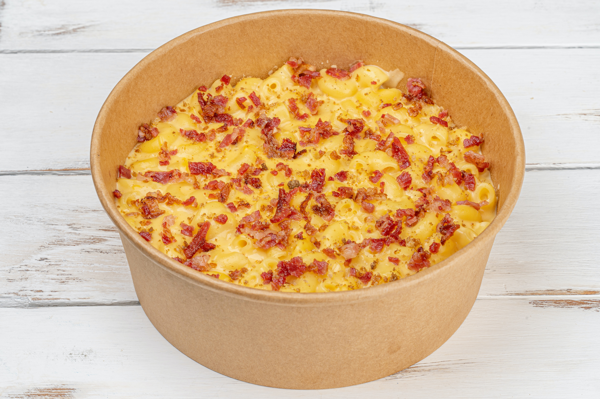

Chicken Casserole

Description
Just like Grandma's chicken casserole. A fulfilling hearty meal assembled and baked in the oven.
Ingredients
- 2 cups cooked shredded chicken
- 1 can cream of mushroom soup
- 1 can cream of chicken soup
- 1 cup sour cream
- 1 sleeve of ritz crackers (crushed)
- 4 tbsp of butter diced
- poppy seed
- salt and pepper
Steps
- Preheat the oven to 375 degrees.
- Spray a 9 x 13 pan with cooking spray.
- Mix the soups and sourcream with the chicken. Add salt and pepper to taste. Spread the mixture in a pan.
- Top with the ritz crackers and butter.
- Sprinkle poppy seed on top.
- Bake for 45 minutes or until bubbly and ritz crackers are browned.